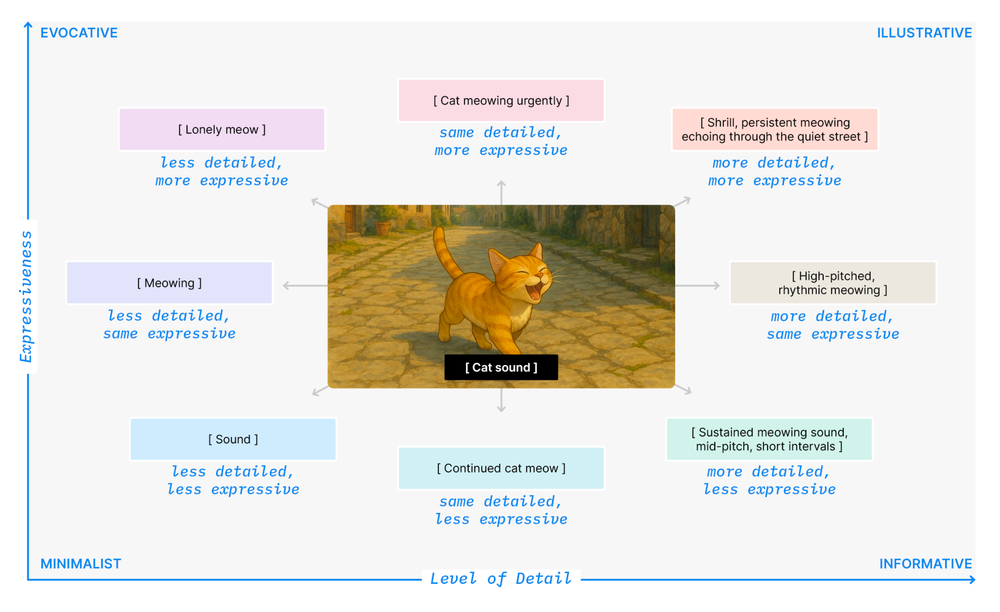
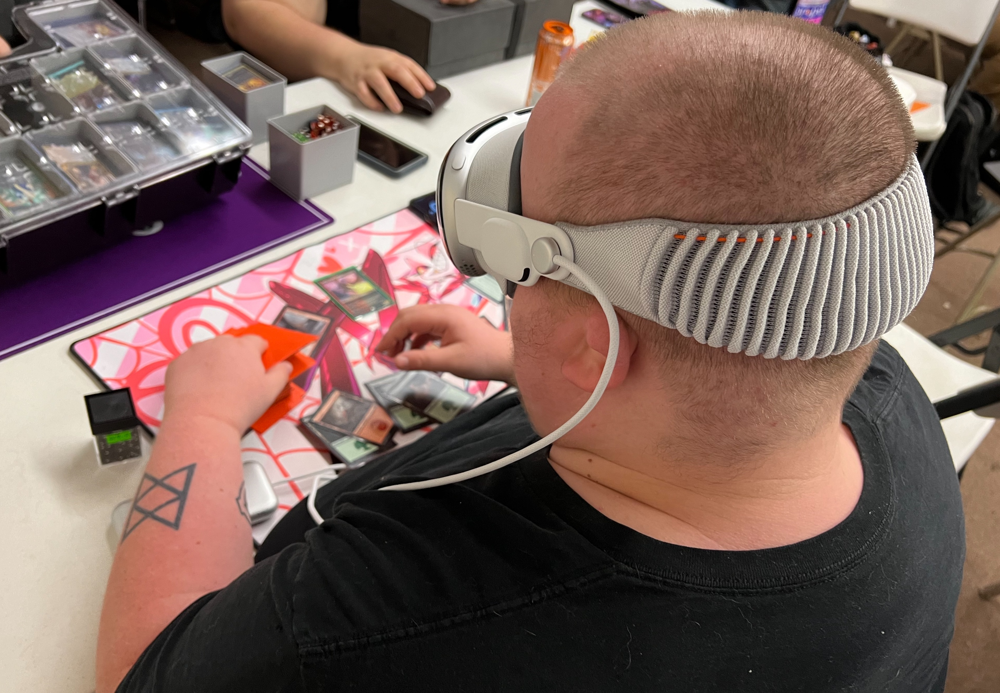
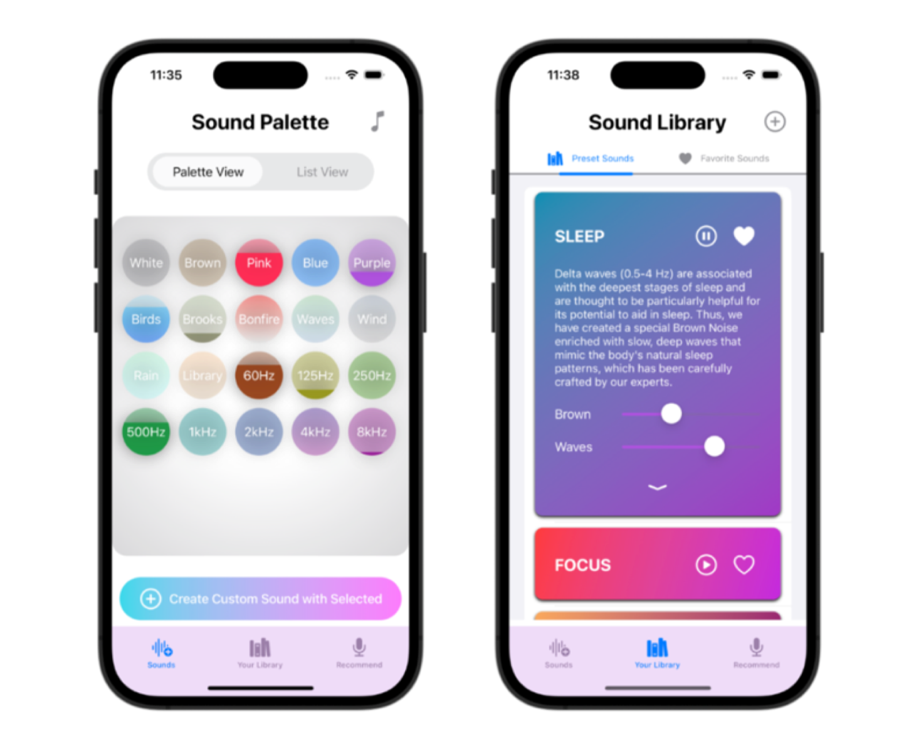
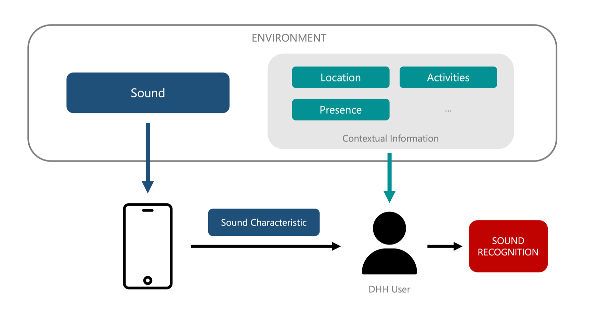
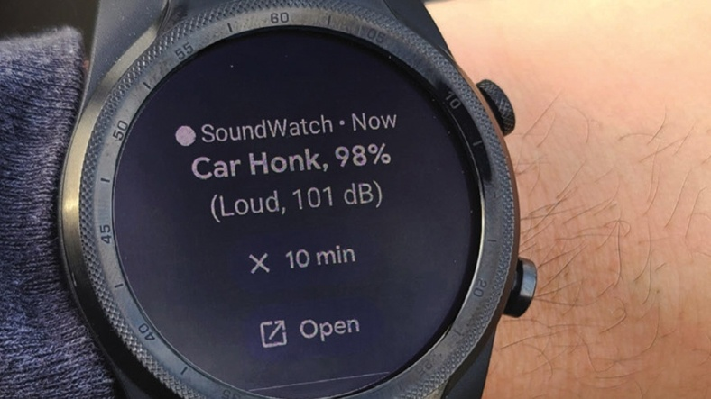

Aug 2025
Our work on transforming non-speech captions with anchored generative models is headed to ASSETS 2025 in Denver!

Hi! I am a Ph.D. Candidate and a Human-Computer Interaction researcher, advised by Prof. Dhruv Jain. I am a part of the Soundability Lab at Michigan CSE.
My research focuses on human-AI collaboration in accessibility. Specifically, I study how AI can adapt to individual needs and contexts, giving people meaningful control over how they access, interpret, and respond to the world around them.
Our work on transforming non-speech captions with anchored generative models is headed to ASSETS 2025 in Denver!
I will present SoundWeaver at CHI 2025 in Yokohama, sharing how we support real-time sensemaking of auditory environments.
Our Human-AI Collaborative Sound Awareness (HACS) paper was accepted to CHI 2024!
Thrilled to continue my Ph.D. journey at Michigan CSE and keep building accessible technologies with the Soundability Lab.
Our field study of mobile sound recognition systems received an Honorable Mention at ASSETS 2023.





I love connecting with researchers, designers, and community partners who care about creating a more accessible world. Feel free to reach out.
Computer Science & Engineering
University of Michigan
Soundability Lab · Ann Arbor, MI